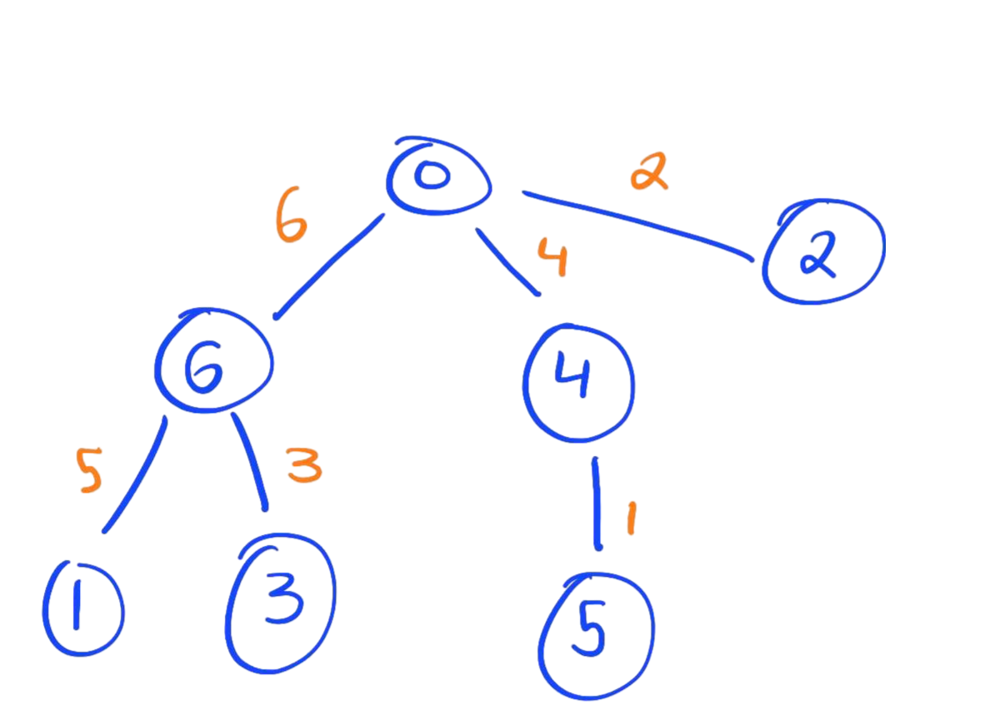
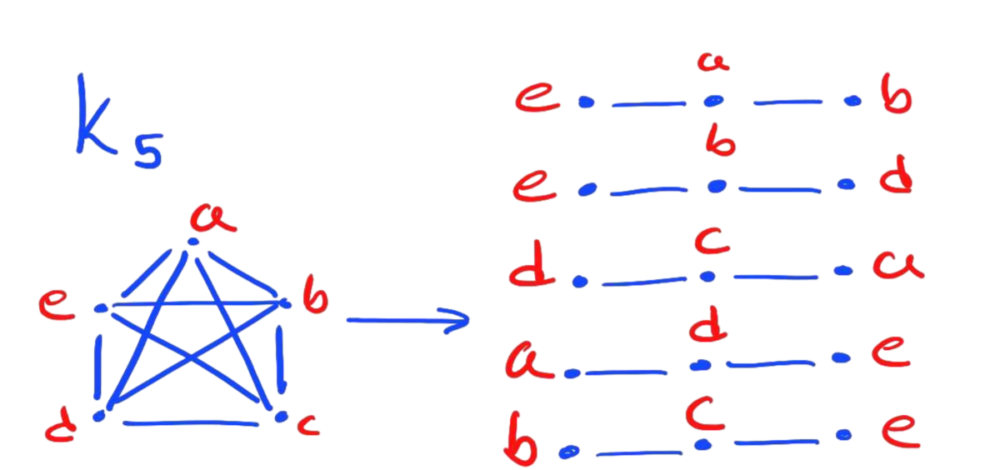

Graceful Labeling
Introduction
Graceful labelings are the topic of some very imfamous theorems and unsolved problems in the field of graph theory. Like many other problems in graph theory, graceful labelings are deceptively simple, hiding much anguish and suffer behinds its relatively simple definition. The problem at the center of this topic, the Ringel-Kotzig conjecture, or more typically the Graceful Tree Conjecture (GTC) was famously described as being a "disease" for the field, which makes it a fantastic topic to research.
Definitions
What is a graceful labeling?
Formally
Given a graph \(G\) on \(n\) vertices, a vertex labeling is a injective function \( \phi:V(G) \rightarrow \{0, \dots, n-1\}\). A graceful labeling (also called a \(\beta\)-valuation) is a injective function \( \psi:E(G) \rightarrow \{1, \dots, n\} \) such that for any edge \(e=uv \in E(G)\), we have that \( \psi(e) = | \phi(u) - \phi(v) |\).
Informally
Consider a graph \(G\) on \(n\) vertices, and we give each vertex a distinct label, going from 0 to \(n-1\). For example, if we have 4 vertices, then our labels for the vertices of \(G\) are \(\{0,1,2,3\}\). Now, suppose that we take the labels for two adjacent vertices, that is two vertices which lie on the same edge, and we take the absolute different of their labels. The idea behind a graceful labeling is that, if we are really careful about how we assign our vertex labels, then the absolute differences between the vertices on each edge will form the sequence \(\{1,2,\dots,n\}\), meaning that no two edges will have the same difference.

(1) An example of a graceful labeling for a graph with 6 vertices. (Wikipedia)
Graceful Tree Conjecture
As I said earlier, most problems in graph theory are deceptively simple, that is they can be easy to understand, but hide much of their complexity in the details. The Graceful Tree Conjecture is one of those problems. The Graceful Tree Conjecture is simple this:
Conjecture. Every tree has a graceful labeling
To be clear about earlier, this is not the case for graphs in general. In fact, if you draw out any arbitrary graph on paper, you'll find out quickly that it can be very difficult to find a graceful labeling for it. However, the claim here is that if you draw specifically a tree, that no matter what you can find a graceful labeling.
(2) A tree with a graceful labeling.
But Why?
Well, first off, you're asking the wrong questions.
Second, the GTC has an important connect to another, much more useful problem in graph theory,
called Ringel's Conjecture(*). But first, in order to understand this conjecture, we must
cover another important topic of graph theory, graph decomposition.
*: No longer a conjecture, but we'll get into that later
Graph Decomposition
Definition
Given a graph \(G = (V,E)\), a decomposition of \(G\) is a set of edgewise-disjoint subgraphs
\( D = \{ H_1, \dots, H_k \} \) such that \( \bigcup_{i=1}^{k} H_i = G \). By edgewise-disjoint, we mean
that for any two subgraphs \( H_i,H_j \in D\), \( E(H_i) \cap E(H_j) = \emptyset \).
Going along with the trend here, the more digestible way to think about decompositions is that we are
breaking a graph down into a collection a "components", such that no two components share an edge, and
if we take all of the components and piece them together, they can combine to build back the original graph.
Purpose
As with many things in life, often times breaking down a big problem into a collection of smaller, more
tameable problems is a good approach to overcoming difficult challenges. Decompositions are just that.
Say you want to prove some statement about a graph with a particular structure. Proving that statement
might be difficult when looking at the graph as a whole, but if you can show that the graph you're working
with can be decomposed down into specific components, each of which you can prove that statement for
individually, then that statement must hold for the full graph as a whole.
So, back to the original point, Ringel's Conjecture is a statement dealing with the decompositions of
complete graphs, graphs where each vertex is connected to every other vertex. We'll get this out of the
way now to avoid confusion, but Ringel's Conjecture has been solved
as of 2020, however we'll continue to call it "Ringel's Conjecture" here for convenience.
Anyways, here's the statement:
Conjecture. Given a tree \(T\) on \(n\) edges, \(K_{2n+1}\) decomposes into \(2n+1\) copies of \(T\)
A decomposition of \(K_5\) into 5 3-paths
The Connection
Now it's time for the big reveal where we show how graceful labelings and decompositions are related.
Theorem. If a tree \(T\) with \(n\) edges has a graceful labeling, then \(K_{2n+1}\) decomposes into \(2n+1\) copies of T.
Take a minute to admire that statement. Seriously, do it.
Isn't that awesome? In case you didn't catch it, this theorem means that the Graceful Tree Conjecture implies Ringel's Conjecture,
so if you were to prove GTC, then you would also be proving Ringel's Conjecture at the same time. That connection isn't
super easy to spot either. Afterall, we took two seemingly unrelated concepts about graphs and just showed that
they're actually deeply connected. It's very rare in math that you get a connected as clean and profound as that one.
It's similar to how the Fundamental Theorem of Calculus relates the ideas of the derivative and the integral, ideas that,
had you not studied calculus, would seem completely different from each other.
Anyways, I hope you appriciated this journey through graph theory. Hopefully there will be more posts like this one to come. Stay tuned.
- Jackson